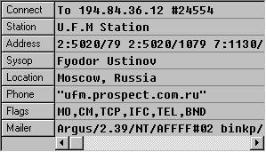

»нформационна€ панель удаленного узла
Ёта панель по€вл€етс€ во врем€ сеанса св€зи. ¬ ней содержитс€ информаци€ о удаленном узле.

Connect - в этой секции указываетс€ скорость соединени€, а также протоколы коррекции ошибок и компрессии данных, которые используютс€ при соединении.
¬се остальные параметры показываютс€ исход€ из информации полученной им из EMSI
- Station - в этой секции указываетс€ наименование станции.
- Address - основной адрес узла, а так же его дополнительные адреса.
- Sysop - им€ и фамили€ системного оператора узла.
- Location - географическое местоположение узла (обычно город и страна).
- Phone - телефонный номер узла.
- Flags - дополнительные флаги узла.
- Mailer - наименование и верси€ почтовой системы, установленной на узле, с которым в данный момент ведетс€ сеанс св€зи.